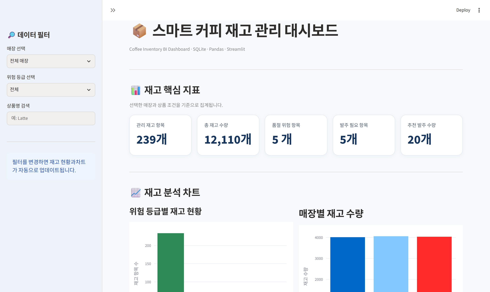
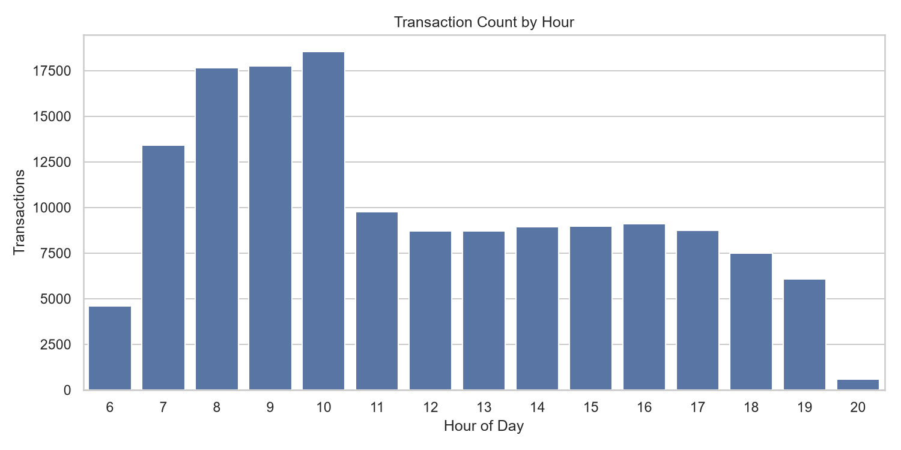
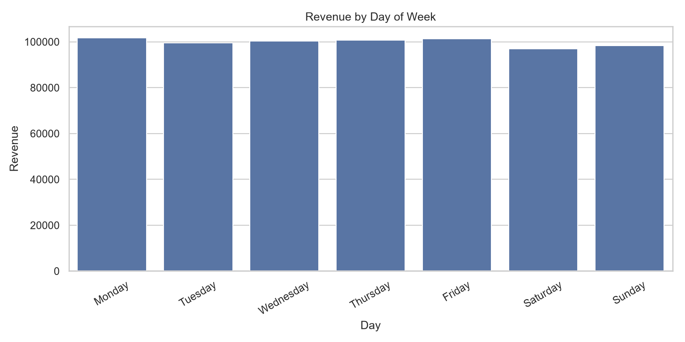
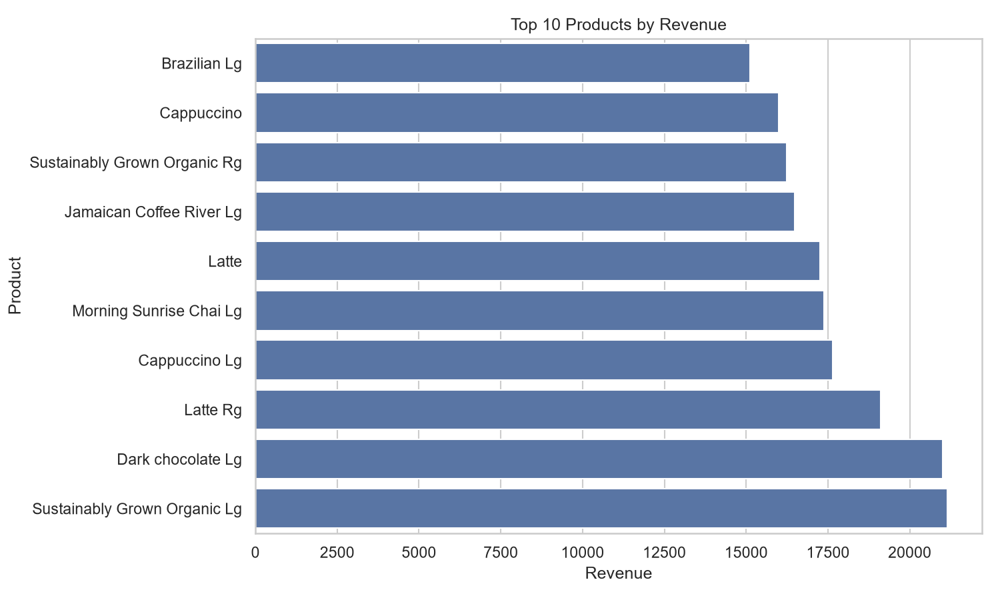

프로젝트 소개
커피 매장의 재고 현황을 분석하고, 품절 위험 상품과 발주 필요 상품을 파악하기 위해 개발한 스마트 재고 관리 시스템입니다.
학습용 시뮬레이션 데이터를 활용한 개인 프로젝트입니다.
사용 기술
주요 기능
매장별 재고와 주요 지표 확인
위험 상품 및 예상 품절 시점 분석
상품별 발주 필요 여부 및 추천 수량 확인
SQLite를 활용한 재고 변경 및 이력 기록
Plotly 기반 대시보드 차트
분석 결과 및 관리 데이터 저장
🛠 프로젝트 개발 과정
Python과 Pandas로 판매 데이터를 정리하고 분석 가능한 형태로 변환했습니다.
매장별·상품별 판매 패턴을 분석하고 재고 관리에 필요한 지표를 생성했습니다.
평균 판매량과 재고 정보를 활용해 품절 위험과 발주 추천 결과를 계산했습니다.
매장, 상품, 재고, 입출고 이력을 관리할 수 있도록 데이터베이스를 구성했습니다.
필터, KPI, Plotly 차트, 재고 관리 및 CSV 다운로드 기능을 구현했습니다.
주요 기능을 점검하고 GitHub와 GitHub Pages를 통해 프로젝트를 공개했습니다.
대시보드 화면
실제 구현한 Streamlit 대시보드의 캡처 이미지입니다.

이미지는 화면 미리보기이며 직접 조작할 수는 없습니다.
📊 데이터 분석 결과
커피 판매 데이터를 활용해 매장별 매출, 시간대별 판매 패턴, 요일별 매출과 인기 상품을 분석했습니다.
① 매장별 매출 분석
매장별 매출 규모를 비교한 결과입니다.

② 시간대별 매출 분석
시간대별 판매 패턴과 피크 시간을 확인합니다.

③ 요일별 매출 분석
요일에 따른 매출 분포를 비교합니다.

④ 매출 상위 10개 상품
매출액 기준 상위 상품을 비교합니다.

데이터 분석 및 문제 해결
매장별 재고 비교, 품절 위험 분석, 자동 발주 추천을 하나의 대시보드에서 확인할 수 있도록 구성했습니다.
입출고 기능과 SQLite 저장을 연결하고, 데이터 시각화 및 사용자 인터페이스를 개선했습니다.
프로젝트 성과 및 향후 개선
데이터 전처리부터 DB 구축, 웹 대시보드 구현, GitHub 문서화까지 전체 개발 과정을 경험했습니다.
향후 실제 매출 데이터 연동과 발주 추천 정확도 검증을 통해 시스템을 개선할 계획입니다.
GitHub 소스코드
전체 코드와 실행 방법은 GitHub에서 확인할 수 있습니다.
GitHub 프로젝트 보기